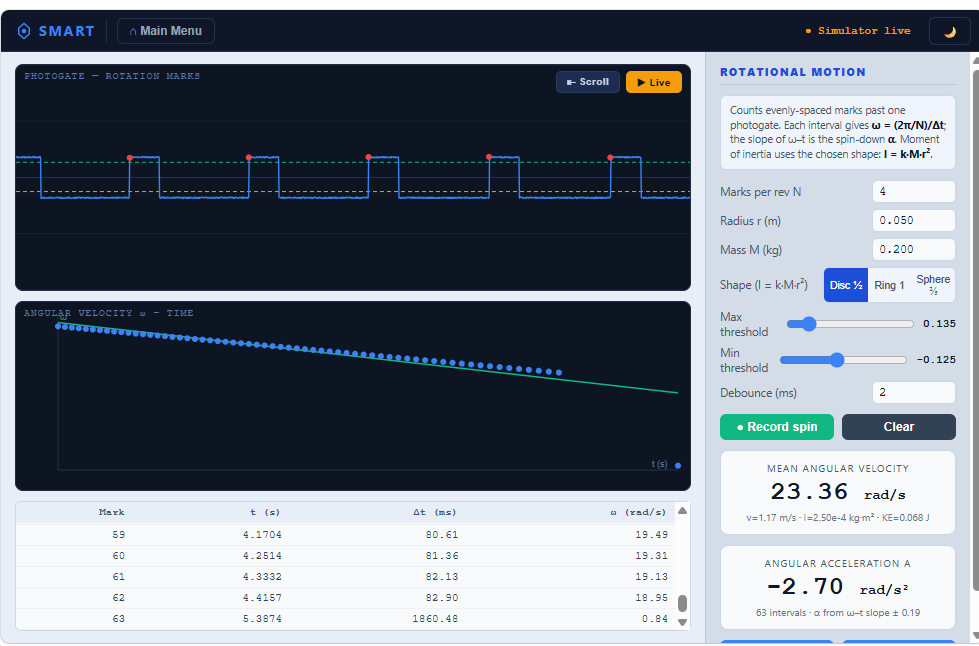

SMART: the Sound-to-Motion Analysis and Recording Tool
A free, self-contained, single-file HTML science instrument that turns the audio system already inside every school device into a precision physics measurement tool. No installation, no server, no network, and no framework. It runs in Chrome, Edge, Firefox and Safari.
What it does
SMART exploits the PC audio subsystem as a precision physics instrument. Using the browser's getUserMedia, AudioWorklet and AnalyserNode, it provides a precision event timer with a theoretical resolution of about 21 to 23 microseconds at 44.1 or 48 kHz, alongside a waveform and spectrum scope. It accepts one or two input channels through a standard 3.5 mm audio jack, a USB adapter, or microphone input, and connects to low-cost do-it-yourself sensors for real-time data logging.
Six module families
- Capture and Calibrate: threshold setup and free recording.
- Linear Motion and Gravity: picket-fence free-fall measurement of g.
- Periodic Motion: pendulum period, simple harmonic motion, and damping.
- Rotational Motion: angular velocity, spin-down, moment of inertia, and kinetic energy.
- Two-Event Timing: speed of sound, coefficient of restitution, projectile motion, and momentum in collisions.
- Resonance and Frequency: tuning fork identification, harmonic spectrum, beats, vibrating string, resonance tube, and the Doppler effect.
All modules share a common acquisition core and a built-in signal simulator, so every experiment can be demonstrated and tested without any hardware or microphone permission.

Why it matters for classrooms
Every school laptop, Chromebook and tablet already contains an audio subsystem running at 44.1 or 48 kHz, a timing resolution that exceeds the specification of purpose-built data loggers costing hundreds of dollars. SMART makes that capability available at no additional cost on hardware schools already own. Beyond a standard 3.5 mm audio jack, the low-cost sensor components, such as infrared photogates and piezo impact sensors, can be assembled for under five dollars. The cross-platform browser support means SMART reaches every school device type, including Chromebooks and Safari-only iPad deployments.
This matters more as AI use grows. When simulated datasets can be drawn from models trained on a polluted scientific literature, a measurement a learner takes for themselves, noisy, calibrated, and able to surprise, has a transparent provenance that simulated data cannot match. And because SMART is free and runs on hardware schools already own, cost can no longer justify simulating instead: with the equipment barrier removed, simulation has to be defended on other grounds.
A sister application to RIGEL-WEB
SMART is the sister application to RIGEL-WEB, sharing its single-file, no-framework architecture. The two are complementary: SMART handles one or two fast acoustic channels requiring sample-accurate timing, while RIGEL-WEB handles many-channel sensor work through a serial microcontroller. Together they form a zero-cost, cross-platform laboratory instrument suite that uses hardware already present in every school device.
Part of a longer line of work
SMART continues a method visible across three decades: identify a structural property of an existing tool, use it for a purpose its designers did not intend, and document the result. The same principle connects the 1991 QBasic mapping system, the 2008 GameMaker-based RIGEL instrument, the 2025 Casio calculator protocol discovery, and the 2026 browser-based tools. It is a continuation of the question that founded the Nexus Research Group in 1997: how do you do authentic science with nothing? The approach is described further on the Design by Subversion page.
Archived on Zenodo with a permanent DOI: https://doi.org/10.5281/zenodo.20542011